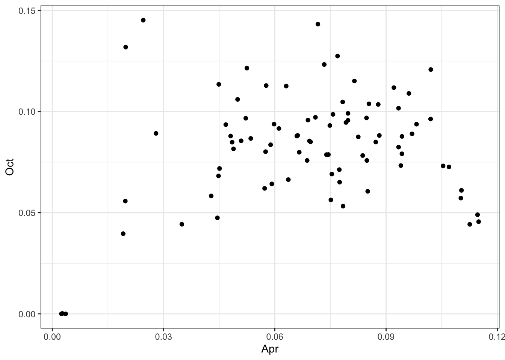
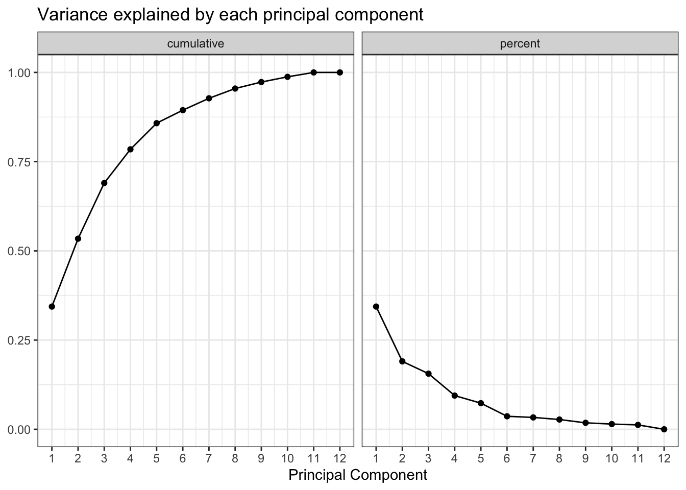
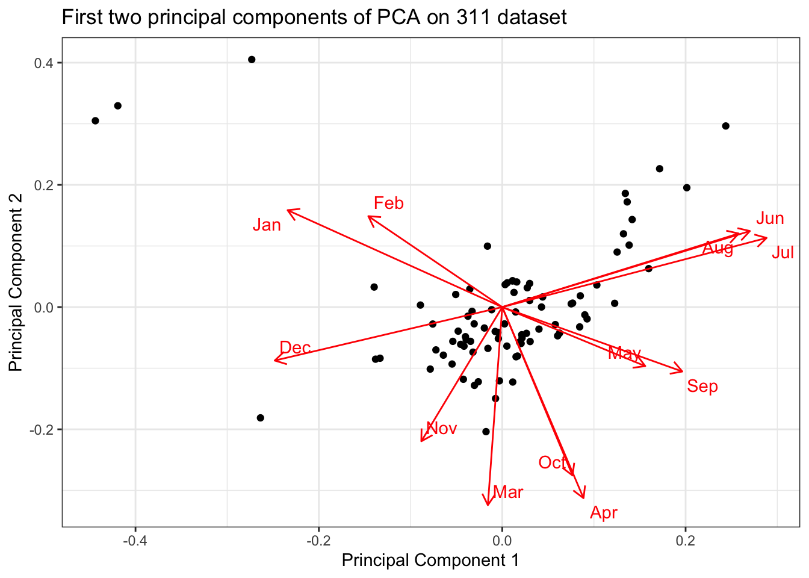
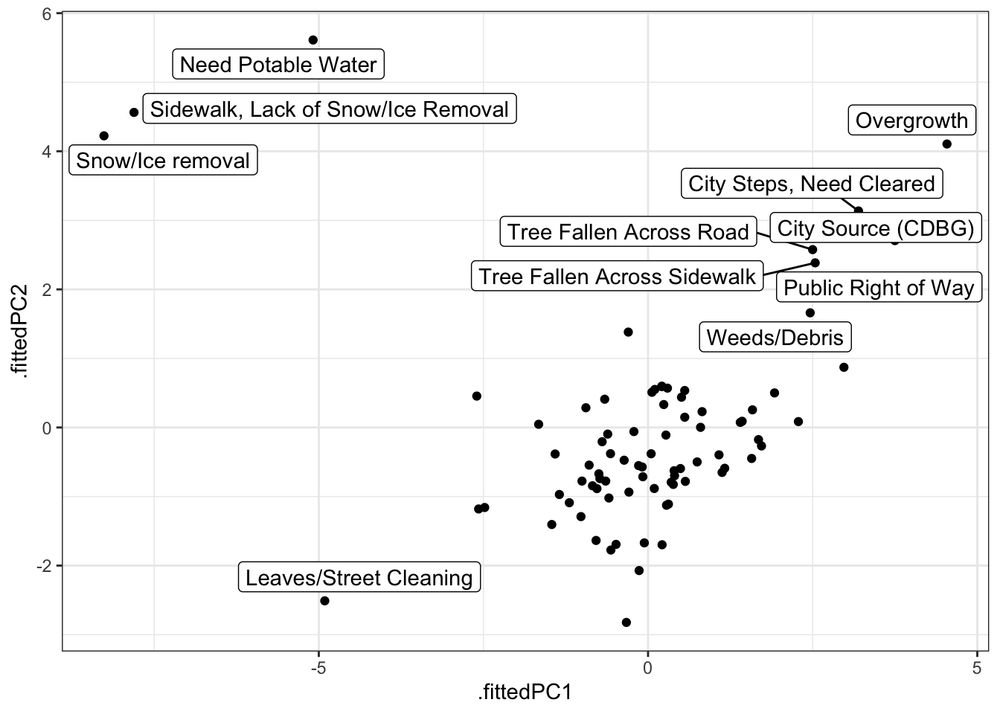
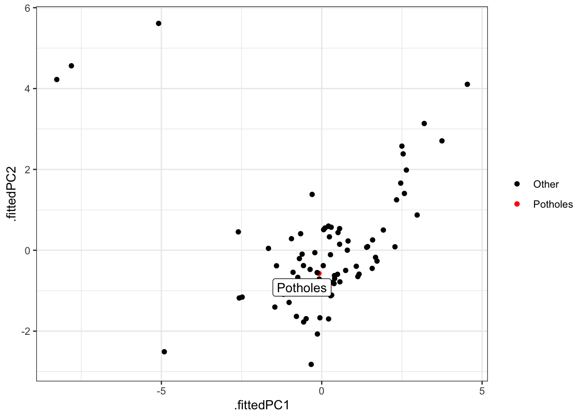

install.packages(c("tidyverse", "lubridate", "broom", "ggfortify", "ggrepel", "janitor"))Principal Component Analysis in R
Principal Component Analysis is an unsupervised method that reduces the number of dimensions in a dataset and highlights where the data varies. We will use PCA to analyze the 311 dataset from the WPRDC.
Setup
Install packages
Set up your environment
library(tidyverse)
library(lubridate)
library(broom)
library(ggfortify)
library(ggrepel)
library(janitor)
options(scipen = 999, digits = 4)
set.seed(1234)
theme_set(theme_bw())Load the data
read_csv("https://raw.githubusercontent.com/conorotompkins/pittsburgh_311/master/data/pittsburgh_311.csv", progress = FALSE) %>%
clean_names() %>%
mutate(date = ymd(str_sub(created_on, 1, 10)),
month = month(date, label = TRUE)) %>%
filter(date < "2018-07-19") -> dfPrep the data
Create a dataframe of the top request types
(df %>%
count(request_type, sort = TRUE) %>%
filter(n > 400)-> df_top_requests)# A tibble: 84 × 2
request_type n
<chr> <int>
1 Potholes 25202
2 Weeds/Debris 16503
3 Building Maintenance 10469
4 Snow/Ice removal 7006
5 Refuse Violations 6515
6 Abandoned Vehicle (parked on street) 5877
7 Missed Pick Up 4689
8 Replace/Repair a Sign 4445
9 Building Without a Permit 4404
10 Litter 4198
# ℹ 74 more rowsCount the number of requests per month by request type, filter for the top request types, and fill in gaps in the data
(df %>%
semi_join(df_top_requests) %>%
group_by(request_type, month) %>%
summarize(n = n()) %>%
ungroup() %>%
complete(request_type, month) %>%
replace_na(replace = list(n = 0)) -> df_months)# A tibble: 1,008 × 3
request_type month n
<chr> <ord> <int>
1 Abandoned Vehicle (parked on street) Jan 523
2 Abandoned Vehicle (parked on street) Feb 427
3 Abandoned Vehicle (parked on street) Mar 452
4 Abandoned Vehicle (parked on street) Apr 417
5 Abandoned Vehicle (parked on street) May 488
6 Abandoned Vehicle (parked on street) Jun 466
7 Abandoned Vehicle (parked on street) Jul 457
8 Abandoned Vehicle (parked on street) Aug 596
9 Abandoned Vehicle (parked on street) Sep 525
10 Abandoned Vehicle (parked on street) Oct 571
# ℹ 998 more rowsCalculate the percentage of a request type for each month
(df_months %>%
group_by(request_type) %>%
mutate(request_type_total = sum(n),
month_percentage = n / request_type_total) -> df_months)# A tibble: 1,008 × 5
# Groups: request_type [84]
request_type month n request_type_total month_percentage
<chr> <ord> <int> <int> <dbl>
1 Abandoned Vehicle (parked on… Jan 523 5877 0.0890
2 Abandoned Vehicle (parked on… Feb 427 5877 0.0727
3 Abandoned Vehicle (parked on… Mar 452 5877 0.0769
4 Abandoned Vehicle (parked on… Apr 417 5877 0.0710
5 Abandoned Vehicle (parked on… May 488 5877 0.0830
6 Abandoned Vehicle (parked on… Jun 466 5877 0.0793
7 Abandoned Vehicle (parked on… Jul 457 5877 0.0778
8 Abandoned Vehicle (parked on… Aug 596 5877 0.101
9 Abandoned Vehicle (parked on… Sep 525 5877 0.0893
10 Abandoned Vehicle (parked on… Oct 571 5877 0.0972
# ℹ 998 more rowsCheck for bad data
df_months %>%
filter(is.na(month_percentage) | is.nan(month_percentage))# A tibble: 0 × 5
# Groups: request_type [0]
# ℹ 5 variables: request_type <chr>, month <ord>, n <int>,
# request_type_total <int>, month_percentage <dbl>Spread the data to turn the months into the columns
(df_months %>%
select(request_type, month, month_percentage) %>%
spread(month, month_percentage) %>%
ungroup() -> df_months)# A tibble: 84 × 13
request_type Jan Feb Mar Apr May Jun Jul Aug Sep
<chr> <dbl> <dbl> <dbl> <dbl> <dbl> <dbl> <dbl> <dbl> <dbl>
1 Abandoned V… 0.0890 0.0727 0.0769 0.0710 0.0830 0.0793 0.0778 0.101 0.0893
2 Barking Dog 0.0563 0.0608 0.0608 0.0631 0.104 0.101 0.0788 0.113 0.124
3 Board Up (P… 0.0395 0.0482 0.0658 0.0943 0.114 0.0899 0.110 0.123 0.0855
4 Broken Side… 0.0337 0.155 0.148 0.0872 0.105 0.0964 0.0696 0.0735 0.0528
5 Building Ma… 0.0708 0.0919 0.103 0.0739 0.0842 0.0829 0.0725 0.0919 0.0776
6 Building Wi… 0.0842 0.0697 0.0636 0.0577 0.105 0.0883 0.0924 0.0815 0.0829
7 Catch Basin… 0.0636 0.0377 0.0778 0.0748 0.0984 0.132 0.0825 0.127 0.105
8 City Source… 0.00527 0.00246 0.0105 0.0428 0.196 0.213 0.195 0.164 0.0808
9 City Steps,… 0.0443 0.0180 0.0148 0.0197 0.116 0.216 0.203 0.146 0.118
10 City Steps,… 0.0265 0.0305 0.0713 0.0509 0.128 0.120 0.136 0.128 0.108
# ℹ 74 more rows
# ℹ 3 more variables: Oct <dbl>, Nov <dbl>, Dec <dbl>Check that they all add up to 1 across the rows
(df_months %>%
select(Jan:Dec) %>%
mutate(row_sum = rowSums(.)) %>%
select(row_sum, everything()) -> test)# A tibble: 84 × 13
row_sum Jan Feb Mar Apr May Jun Jul Aug Sep
<dbl> <dbl> <dbl> <dbl> <dbl> <dbl> <dbl> <dbl> <dbl> <dbl>
1 1 0.0890 0.0727 0.0769 0.0710 0.0830 0.0793 0.0778 0.101 0.0893
2 1 0.0563 0.0608 0.0608 0.0631 0.104 0.101 0.0788 0.113 0.124
3 1 0.0395 0.0482 0.0658 0.0943 0.114 0.0899 0.110 0.123 0.0855
4 1 0.0337 0.155 0.148 0.0872 0.105 0.0964 0.0696 0.0735 0.0528
5 1 0.0708 0.0919 0.103 0.0739 0.0842 0.0829 0.0725 0.0919 0.0776
6 1 0.0842 0.0697 0.0636 0.0577 0.105 0.0883 0.0924 0.0815 0.0829
7 1 0.0636 0.0377 0.0778 0.0748 0.0984 0.132 0.0825 0.127 0.105
8 1 0.00527 0.00246 0.0105 0.0428 0.196 0.213 0.195 0.164 0.0808
9 1 0.0443 0.0180 0.0148 0.0197 0.116 0.216 0.203 0.146 0.118
10 1 0.0265 0.0305 0.0713 0.0509 0.128 0.120 0.136 0.128 0.108
# ℹ 74 more rows
# ℹ 3 more variables: Oct <dbl>, Nov <dbl>, Dec <dbl>Perform basic comparisons
df_months %>%
ggplot(aes(Jan, Jul)) +
geom_point()
Remember that each dot represents a request type, and the month shows what % of that request type occurred that month
df_months %>%
ggplot(aes(Apr, Oct)) +
geom_point()
It is not feasible to plot all the months against each other. PCA can help by condensing the columns and increasing the variance. PCA creates eigenvectors that represents the data in a concentrated way. Eigenvectors and eigenvalues do not represent observed data. They are calculated representations of the data. We will refer to eigenvectors as “principal components”.
In this case, where our data is measured by months in a year, each principal component could loosely be compared to a season.
Prep the data for PCA
The PCA function requires an all-numeric dataframe, so drop the request types into the dataframe metadata
(df_months %>%
ungroup() %>%
remove_rownames() %>%
column_to_rownames(var = "request_type") -> df_months_pca1) Jan Feb Mar Apr
Abandoned Vehicle (parked on street) 0.088991 0.072656 0.076910 0.070955
Barking Dog 0.056306 0.060811 0.060811 0.063063
Board Up (PLI referral to DPW) 0.039474 0.048246 0.065789 0.094298
Broken Sidewalk 0.033665 0.154552 0.147666 0.087223
Building Maintenance 0.070780 0.091890 0.103353 0.073933
Building Without a Permit 0.084242 0.069709 0.063579 0.057675
Catch Basin, Clogged 0.063642 0.037714 0.077784 0.074838
City Source (CDBG) 0.005267 0.002458 0.010534 0.042837
City Steps, Need Cleared 0.044262 0.018033 0.014754 0.019672
City Steps, Need Repaired 0.026477 0.030550 0.071283 0.050916
Collapsed Catch Basin 0.064220 0.053899 0.061927 0.075688
Commercial Refuse/Dumpsters 0.079430 0.079430 0.089613 0.077393
Curb /Broken/Deteriorated 0.042373 0.048729 0.072034 0.110169
Curb/Request for Asphalt Windrow 0.038660 0.020619 0.028351 0.085052
Dead Animal 0.038181 0.032566 0.043234 0.076923
Dead tree (Public property) 0.034516 0.028763 0.049856 0.066155
Drainage/Leak 0.141304 0.050000 0.035870 0.083696
Drug Enforcement 0.077085 0.049755 0.065172 0.079187
Dumping, Private Property 0.064315 0.076763 0.120332 0.093361
Dumpster (on Street) 0.070866 0.048819 0.042520 0.088189
Early Set Out 0.072444 0.069736 0.062288 0.063643
Excessive Noise/Disturbances 0.057377 0.047131 0.056011 0.085383
Field 0.016432 0.014085 0.042254 0.110329
Fire Safety System Not Working 0.093750 0.185547 0.128906 0.077474
Graffiti, Documentation 0.057116 0.054307 0.103933 0.102060
Graffiti, Removal 0.088710 0.111290 0.098387 0.046774
Hydrant 0.121771 0.062731 0.075646 0.053506
Illegal Dumping 0.065672 0.057214 0.076617 0.106965
Illegal Parking 0.095682 0.075074 0.081943 0.079735
Junk Vehicles 0.079384 0.093602 0.114929 0.068720
Leak 0.171456 0.097418 0.048709 0.044812
Leaves/Street Cleaning 0.028967 0.031486 0.030227 0.059194
Litter 0.064316 0.064555 0.085755 0.093378
Litter Can, Public 0.064777 0.049393 0.060729 0.069636
Maintenance Issue 0.026455 0.031746 0.039153 0.078307
Mayor's Office 0.158455 0.033289 0.023968 0.027963
Missed Blue Bag 0.094002 0.042077 0.051925 0.068935
Missed Pick Up 0.076775 0.048198 0.047345 0.058861
Need Potable Water 0.002398 0.914868 0.001199 0.003597
Operating Without a License 0.041215 0.021692 0.149675 0.114967
Overgrowth 0.005058 0.007867 0.006462 0.019106
Parking Authority 0.086022 0.075269 0.064516 0.105376
Patrol 0.063164 0.047816 0.071429 0.081464
Paving Concern/Problem 0.054819 0.043324 0.042440 0.071618
Paving Request 0.052950 0.047504 0.108321 0.114675
Permit Parking (Residential Parking Permit) 0.107062 0.075171 0.063781 0.079727
Playground 0.015038 0.024436 0.043233 0.093985
Potholes 0.123324 0.052972 0.105230 0.112570
Pruning (city tree) 0.024019 0.025372 0.044317 0.057510
Public Right of Way 0.033397 0.029580 0.020992 0.057252
Question 0.079824 0.064739 0.043997 0.024513
Referral 0.099161 0.050725 0.046148 0.049962
Refuse Violations 0.079202 0.059708 0.065848 0.084728
Replace/Repair a Sign 0.067492 0.053093 0.080315 0.084814
Request New Sign 0.069169 0.049768 0.059047 0.097005
Retaining Wall Maintenance 0.066239 0.091880 0.115385 0.096154
Rodent control 0.040957 0.033594 0.041417 0.052462
Root prune 0.022321 0.038690 0.053571 0.098214
Sidewalk Obstruction 0.052799 0.042621 0.044529 0.052163
Sidewalk, Lack of Snow/Ice Removal 0.767726 0.090465 0.002445 0.002445
Sinkhole 0.103995 0.058973 0.062143 0.066582
Smoke detectors 0.118421 0.064145 0.062500 0.092105
Snow/Ice removal 0.681273 0.135027 0.005995 0.002712
Speeding 0.063973 0.060606 0.084175 0.094276
Street Cleaning/Sweeping 0.027306 0.026790 0.035033 0.102009
Street Light - Repair 0.078803 0.055112 0.067830 0.044888
Street Obstruction/Closure 0.126273 0.040733 0.081466 0.061100
Thank you - DPW 0.136264 0.046154 0.032967 0.065934
Traffic 0.065356 0.053666 0.061637 0.073326
Traffic or Pedestrian Signal, Repair 0.089659 0.047221 0.069934 0.069337
Traffic or Pedestrian Signal, Request 0.056641 0.029297 0.099609 0.087891
Tree Fallen Across Road 0.042589 0.031516 0.051959 0.034923
Tree Fallen Across Sidewalk 0.034125 0.028190 0.044510 0.044510
Tree Issues 0.038384 0.056566 0.076768 0.048485
Tree Removal 0.042949 0.036507 0.071582 0.074445
Unpermitted Electrical Work 0.145055 0.012088 0.030769 0.019780
Unpermitted HVAC Work 0.108516 0.045330 0.064560 0.048077
Utility Cut - Other 0.114889 0.067995 0.052755 0.059789
Utility Cut - PWSA 0.202261 0.050251 0.057789 0.075377
Utility Pole 0.065728 0.075117 0.049296 0.075117
Vacant Building 0.088199 0.083230 0.096066 0.048861
Weeds/Debris 0.029631 0.024965 0.035751 0.045083
Wires 0.060651 0.071006 0.060651 0.078402
Zoning Issue 0.055000 0.065000 0.080833 0.082500
May Jun Jul
Abandoned Vehicle (parked on street) 0.0830356 0.0792922 0.077761
Barking Dog 0.1036036 0.1013514 0.078829
Board Up (PLI referral to DPW) 0.1140351 0.0899123 0.109649
Broken Sidewalk 0.1048202 0.0964040 0.069625
Building Maintenance 0.0841532 0.0829115 0.072500
Building Without a Permit 0.1049046 0.0883288 0.092416
Catch Basin, Clogged 0.0984090 0.1319976 0.082499
City Source (CDBG) 0.1955758 0.2134831 0.195225
City Steps, Need Cleared 0.1163934 0.2163934 0.203279
City Steps, Need Repaired 0.1283096 0.1201629 0.136456
Collapsed Catch Basin 0.1100917 0.0917431 0.083716
Commercial Refuse/Dumpsters 0.0529532 0.1038697 0.105906
Curb /Broken/Deteriorated 0.1525424 0.1122881 0.116525
Curb/Request for Asphalt Windrow 0.1430412 0.2113402 0.155928
Dead Animal 0.0713083 0.1021898 0.139809
Dead tree (Public property) 0.1246405 0.1447747 0.154362
Drainage/Leak 0.0902174 0.1043478 0.102174
Drug Enforcement 0.0988087 0.1023125 0.088998
Dumping, Private Property 0.0746888 0.0622407 0.064315
Dumpster (on Street) 0.0787402 0.1354331 0.105512
Early Set Out 0.0886933 0.0873392 0.111713
Excessive Noise/Disturbances 0.0887978 0.0758197 0.075137
Field 0.1854460 0.1384977 0.150235
Fire Safety System Not Working 0.1139323 0.0572917 0.047526
Graffiti, Documentation 0.1207865 0.1254682 0.073970
Graffiti, Removal 0.0338710 0.0596774 0.091935
Hydrant 0.0922509 0.0571956 0.064576
Illegal Dumping 0.1000000 0.1228856 0.113930
Illegal Parking 0.0765456 0.0691855 0.059863
Junk Vehicles 0.0864929 0.0710900 0.104265
Leak 0.0491963 0.0526059 0.057964
Leaves/Street Cleaning 0.0629723 0.0541562 0.021411
Litter 0.0826584 0.0855169 0.098380
Litter Can, Public 0.0923077 0.0995951 0.127126
Maintenance Issue 0.1417989 0.1185185 0.135450
Mayor's Office 0.0319574 0.1824234 0.065246
Missed Blue Bag 0.0841540 0.1020591 0.087735
Missed Pick Up 0.1027938 0.1123907 0.118789
Need Potable Water 0.0011990 0.0023981 0.000000
Operating Without a License 0.4338395 0.0542299 0.028200
Overgrowth 0.1219444 0.2489463 0.234335
Parking Authority 0.0860215 0.0838710 0.081720
Patrol 0.1015348 0.0879575 0.095041
Paving Concern/Problem 0.1114058 0.1255526 0.085765
Paving Request 0.1397882 0.1458396 0.118306
Permit Parking (Residential Parking Permit) 0.0569476 0.0706150 0.079727
Playground 0.1184211 0.1691729 0.159774
Potholes 0.1346322 0.1150702 0.107095
Pruning (city tree) 0.1234777 0.1742219 0.168133
Public Right of Way 0.1316794 0.1650763 0.154580
Question 0.0483972 0.0936518 0.122564
Referral 0.0362319 0.0846682 0.129291
Refuse Violations 0.0784344 0.0983883 0.100844
Replace/Repair a Sign 0.1196850 0.1113611 0.094713
Request New Sign 0.0932096 0.0927879 0.097427
Retaining Wall Maintenance 0.0961538 0.0982906 0.085470
Rodent control 0.0745513 0.1099862 0.141279
Root prune 0.1190476 0.1264881 0.163690
Sidewalk Obstruction 0.0807888 0.1075064 0.123410
Sidewalk, Lack of Snow/Ice Removal 0.0097800 0.0000000 0.002445
Sinkhole 0.0786303 0.1122384 0.128725
Smoke detectors 0.0871711 0.1348684 0.046053
Snow/Ice removal 0.0008564 0.0001427 0.000000
Speeding 0.0976431 0.0909091 0.104377
Street Cleaning/Sweeping 0.1257084 0.1298300 0.123132
Street Light - Repair 0.0498753 0.0675810 0.097257
Street Obstruction/Closure 0.0549898 0.0509165 0.087576
Thank you - DPW 0.0769231 0.0967033 0.105495
Traffic 0.0887354 0.0600425 0.054729
Traffic or Pedestrian Signal, Repair 0.0854752 0.1040048 0.086671
Traffic or Pedestrian Signal, Request 0.1074219 0.1191406 0.085938
Tree Fallen Across Road 0.1345826 0.2206133 0.137990
Tree Fallen Across Sidewalk 0.1424332 0.1958457 0.126113
Tree Issues 0.1010101 0.1010101 0.129293
Tree Removal 0.1295634 0.1410165 0.118826
Unpermitted Electrical Work 0.1054945 0.1230769 0.085714
Unpermitted HVAC Work 0.1689560 0.0879121 0.085165
Utility Cut - Other 0.0797186 0.0738570 0.082063
Utility Cut - PWSA 0.1005025 0.0967337 0.095477
Utility Pole 0.1126761 0.1244131 0.107981
Vacant Building 0.0683230 0.0608696 0.064182
Weeds/Debris 0.1373690 0.1666364 0.157062
Wires 0.0961538 0.1434911 0.087278
Zoning Issue 0.0958333 0.0866667 0.103333
Aug Sep Oct
Abandoned Vehicle (parked on street) 0.1014123 0.089331 0.0971584
Barking Dog 0.1126126 0.123874 0.1126126
Board Up (PLI referral to DPW) 0.1228070 0.085526 0.0877193
Broken Sidewalk 0.0734507 0.052793 0.0849273
Building Maintenance 0.0918903 0.077562 0.0787086
Building Without a Permit 0.0815168 0.082879 0.1128520
Catch Basin, Clogged 0.1266942 0.104891 0.0931055
City Source (CDBG) 0.1639747 0.080758 0.0582865
City Steps, Need Cleared 0.1459016 0.118033 0.0557377
City Steps, Need Repaired 0.1283096 0.107943 0.0855397
Collapsed Catch Basin 0.1238532 0.113532 0.0986239
Commercial Refuse/Dumpsters 0.1344196 0.071283 0.0712831
Curb /Broken/Deteriorated 0.1186441 0.084746 0.0572034
Curb/Request for Asphalt Windrow 0.1082474 0.079897 0.0605670
Dead Animal 0.1235261 0.112296 0.1274565
Dead tree (Public property) 0.1236817 0.102589 0.0882071
Drainage/Leak 0.1076087 0.058696 0.0782609
Drug Enforcement 0.1135249 0.117730 0.0946041
Dumping, Private Property 0.1327801 0.076763 0.1016598
Dumpster (on Street) 0.1070866 0.086614 0.0881890
Early Set Out 0.1570752 0.080569 0.0663507
Excessive Noise/Disturbances 0.0881148 0.090164 0.1038251
Field 0.1197183 0.098592 0.0610329
Fire Safety System Not Working 0.0449219 0.050781 0.0651042
Graffiti, Documentation 0.0608614 0.067416 0.1207865
Graffiti, Removal 0.1048387 0.125806 0.0935484
Hydrant 0.1254613 0.077491 0.0867159
Illegal Dumping 0.0651741 0.068657 0.0726368
Illegal Parking 0.0969087 0.103042 0.0991168
Junk Vehicles 0.0912322 0.072275 0.0758294
Leak 0.1066732 0.080857 0.0681929
Leaves/Street Cleaning 0.0440806 0.012594 0.0642317
Litter 0.1202954 0.095760 0.0824202
Litter Can, Public 0.1246964 0.110121 0.0850202
Maintenance Issue 0.1174603 0.113228 0.1047619
Mayor's Office 0.1118509 0.114514 0.0892144
Missed Blue Bag 0.1056401 0.089526 0.0957923
Missed Pick Up 0.1106846 0.098315 0.0835999
Need Potable Water 0.0731415 0.000000 0.0000000
Operating Without a License 0.0390456 0.021692 0.0455531
Overgrowth 0.1944366 0.104805 0.0396179
Parking Authority 0.1032258 0.090323 0.0731183
Patrol 0.1097993 0.103306 0.1151122
Paving Concern/Problem 0.0813439 0.089302 0.1432361
Paving Request 0.0928896 0.075340 0.0490166
Permit Parking (Residential Parking Permit) 0.1321185 0.102506 0.0956720
Playground 0.1672932 0.090226 0.0733083
Potholes 0.0759860 0.050155 0.0442425
Pruning (city tree) 0.1586604 0.082206 0.0801759
Public Right of Way 0.1832061 0.094466 0.0620229
Question 0.1646763 0.065996 0.1451917
Referral 0.1525553 0.089245 0.1060259
Refuse Violations 0.1122026 0.085035 0.0968534
Replace/Repair a Sign 0.0899888 0.088189 0.0758155
Request New Sign 0.1100801 0.113454 0.0889920
Retaining Wall Maintenance 0.0769231 0.055556 0.1089744
Rodent control 0.1385182 0.125633 0.1214910
Root prune 0.1056548 0.096726 0.0937500
Sidewalk Obstruction 0.1246819 0.117048 0.0966921
Sidewalk, Lack of Snow/Ice Removal 0.0000000 0.002445 0.0000000
Sinkhole 0.1230184 0.088142 0.0798985
Smoke detectors 0.0756579 0.041118 0.1118421
Snow/Ice removal 0.0001427 0.000000 0.0001427
Speeding 0.1144781 0.112795 0.0791246
Street Cleaning/Sweeping 0.1215868 0.098403 0.0963421
Street Light - Repair 0.1057357 0.105237 0.1134663
Street Obstruction/Closure 0.1201629 0.120163 0.0916497
Thank you - DPW 0.1252747 0.112088 0.0879121
Traffic 0.1046759 0.162062 0.1232731
Traffic or Pedestrian Signal, Repair 0.1165571 0.105798 0.0854752
Traffic or Pedestrian Signal, Request 0.0742188 0.111328 0.1035156
Tree Fallen Across Road 0.1831346 0.064736 0.0442930
Tree Fallen Across Sidewalk 0.2121662 0.063798 0.0474777
Tree Issues 0.1454545 0.094949 0.0848485
Tree Removal 0.1460272 0.085183 0.0787402
Unpermitted Electrical Work 0.0571429 0.065934 0.1318681
Unpermitted HVAC Work 0.0824176 0.075549 0.0879121
Utility Cut - Other 0.1160610 0.110199 0.0937866
Utility Cut - PWSA 0.0716080 0.062814 0.0690955
Utility Pole 0.1197183 0.077465 0.0563380
Vacant Building 0.0749482 0.077847 0.0815735
Weeds/Debris 0.1616070 0.097922 0.0718657
Wires 0.1316568 0.091716 0.0532544
Zoning Issue 0.0908333 0.079167 0.0875000
Nov Dec
Abandoned Vehicle (parked on street) 0.086098 0.076400
Barking Dog 0.074324 0.051802
Board Up (PLI referral to DPW) 0.076754 0.065789
Broken Sidewalk 0.064269 0.030604
Building Maintenance 0.093419 0.078900
Building Without a Permit 0.086285 0.075613
Catch Basin, Clogged 0.064820 0.043606
City Source (CDBG) 0.025632 0.005969
City Steps, Need Cleared 0.022951 0.024590
City Steps, Need Repaired 0.075356 0.038697
Collapsed Catch Basin 0.068807 0.053899
Commercial Refuse/Dumpsters 0.069246 0.065173
Curb /Broken/Deteriorated 0.046610 0.038136
Curb/Request for Asphalt Windrow 0.047680 0.020619
Dead Animal 0.083661 0.048849
Dead tree (Public property) 0.051774 0.030681
Drainage/Leak 0.070652 0.077174
Drug Enforcement 0.067274 0.045550
Dumping, Private Property 0.074689 0.058091
Dumpster (on Street) 0.083465 0.064567
Early Set Out 0.069059 0.071090
Excessive Noise/Disturbances 0.092213 0.140027
Field 0.032864 0.030516
Fire Safety System Not Working 0.051432 0.083333
Graffiti, Documentation 0.072097 0.041199
Graffiti, Removal 0.066129 0.079032
Hydrant 0.090406 0.092251
Illegal Dumping 0.083582 0.066667
Illegal Parking 0.088077 0.074828
Junk Vehicles 0.091232 0.050948
Leak 0.097418 0.124696
Leaves/Street Cleaning 0.430730 0.159950
Litter 0.070272 0.056694
Litter Can, Public 0.068826 0.047773
Maintenance Issue 0.053968 0.039153
Mayor's Office 0.083888 0.077230
Missed Blue Bag 0.091316 0.086840
Missed Pick Up 0.070164 0.072084
Need Potable Water 0.000000 0.001199
Operating Without a License 0.026030 0.023861
Overgrowth 0.013768 0.003653
Parking Authority 0.068817 0.081720
Patrol 0.070838 0.052538
Paving Concern/Problem 0.108753 0.042440
Paving Request 0.034493 0.020877
Permit Parking (Residential Parking Permit) 0.077449 0.059226
Playground 0.041353 0.003759
Potholes 0.053289 0.025434
Pruning (city tree) 0.041272 0.020636
Public Right of Way 0.044847 0.022901
Question 0.084852 0.061596
Referral 0.081998 0.073989
Refuse Violations 0.067536 0.071220
Replace/Repair a Sign 0.070191 0.064342
Request New Sign 0.076339 0.052720
Retaining Wall Maintenance 0.070513 0.038462
Rodent control 0.071330 0.048780
Root prune 0.043155 0.038690
Sidewalk Obstruction 0.086514 0.071247
Sidewalk, Lack of Snow/Ice Removal 0.000000 0.122249
Sinkhole 0.058339 0.039315
Smoke detectors 0.088816 0.077303
Snow/Ice removal 0.003711 0.169997
Speeding 0.052189 0.045455
Street Cleaning/Sweeping 0.082947 0.030912
Street Light - Repair 0.115960 0.098254
Street Obstruction/Closure 0.089613 0.075356
Thank you - DPW 0.065934 0.048352
Traffic 0.088735 0.063762
Traffic or Pedestrian Signal, Repair 0.084877 0.054991
Traffic or Pedestrian Signal, Request 0.068359 0.056641
Tree Fallen Across Road 0.036627 0.017036
Tree Fallen Across Sidewalk 0.040059 0.020772
Tree Issues 0.070707 0.052525
Tree Removal 0.047960 0.027201
Unpermitted Electrical Work 0.101099 0.121978
Unpermitted HVAC Work 0.074176 0.071429
Utility Cut - Other 0.069168 0.079719
Utility Cut - PWSA 0.081658 0.036432
Utility Pole 0.075117 0.061033
Vacant Building 0.132091 0.123810
Weeds/Debris 0.045386 0.026722
Wires 0.076923 0.048817
Zoning Issue 0.092500 0.080833Create the PCA object
(df_months_pca1 %>%
prcomp(scale = TRUE) -> pc)Standard deviations (1, .., p=12):
[1] 2.0313544303132338165 1.5112299607905637089 1.3677583442481686671
[4] 1.0647449915481708160 0.9373153843502739502 0.6612690017981475155
[7] 0.6319678449167122070 0.5732234023111666410 0.4666060722915733039
[10] 0.4192405535100036107 0.3847717270238655840 0.0000000000000002152
Rotation (n x k) = (12 x 12):
PC1 PC2 PC3 PC4 PC5 PC6 PC7 PC8
Jan -0.3509 0.2377 0.036588 -0.40554 -0.40259 -0.0878343 0.04648 0.10077
Feb -0.2189 0.2230 -0.226391 0.69886 0.14610 0.1005237 0.15306 -0.04311
Mar -0.0235 -0.4858 -0.323760 0.11519 -0.19761 -0.1724337 -0.62037 0.31077
Apr 0.1329 -0.4686 -0.301500 -0.04306 -0.07313 -0.5014973 0.54199 -0.09929
May 0.2339 -0.1448 -0.445597 -0.33914 0.15507 0.5723879 -0.10942 -0.40042
Jun 0.4049 0.1866 0.002112 -0.22765 0.21210 -0.0386388 0.13438 0.42038
Jul 0.4322 0.1697 0.095923 -0.10888 0.01800 -0.1443989 0.02032 0.13081
Aug 0.3866 0.1805 0.189907 0.17598 0.04242 -0.2554247 -0.44835 -0.13536
Sep 0.2944 -0.1580 0.365255 0.16856 -0.42595 -0.0005222 0.04916 -0.53195
Oct 0.1150 -0.4130 0.389922 0.16708 -0.17452 0.5136274 0.18989 0.43757
Nov -0.1323 -0.3291 0.333424 -0.05855 0.69855 -0.1384698 -0.02866 -0.09659
Dec -0.3720 -0.1311 0.333522 -0.25017 0.03408 -0.0524049 -0.15824 -0.15902
PC9 PC10 PC11 PC12
Jan -0.119474 -0.19207 0.310620 0.5699
Feb 0.085692 0.10149 -0.130098 0.5209
Mar 0.259371 0.01955 0.035606 0.1620
Apr -0.264116 0.01396 -0.143422 0.1379
May -0.106727 0.02849 -0.028027 0.2717
Jun 0.373786 -0.36939 -0.413396 0.2471
Jul 0.103405 0.77442 0.256091 0.2205
Aug -0.607417 -0.20278 -0.123033 0.1983
Sep 0.454920 -0.16862 0.035475 0.1519
Oct -0.304459 0.02271 -0.003209 0.1456
Nov 0.104258 -0.14115 0.387838 0.2472
Dec 0.008971 0.35391 -0.678722 0.1743Inspect the PCA object with tidier functions from the broom library. These functions turn the PCA object into a tidy dataframe
pc %>%
tidy() %>%
head()# A tibble: 6 × 3
row PC value
<chr> <dbl> <dbl>
1 Abandoned Vehicle (parked on street) 1 -0.844
2 Abandoned Vehicle (parked on street) 2 -0.844
3 Abandoned Vehicle (parked on street) 3 0.383
4 Abandoned Vehicle (parked on street) 4 0.311
5 Abandoned Vehicle (parked on street) 5 -0.206
6 Abandoned Vehicle (parked on street) 6 0.0620pc %>%
tidy("pcs")# A tibble: 12 × 4
PC std.dev percent cumulative
<dbl> <dbl> <dbl> <dbl>
1 1 2.03e+ 0 0.344 0.344
2 2 1.51e+ 0 0.190 0.534
3 3 1.37e+ 0 0.156 0.690
4 4 1.06e+ 0 0.0945 0.785
5 5 9.37e- 1 0.0732 0.858
6 6 6.61e- 1 0.0364 0.894
7 7 6.32e- 1 0.0333 0.927
8 8 5.73e- 1 0.0274 0.955
9 9 4.67e- 1 0.0181 0.973
10 10 4.19e- 1 0.0146 0.988
11 11 3.85e- 1 0.0123 1
12 12 2.15e-16 0 1 pc %>%
augment(data = df_months) -> au
au %>%
head()# A tibble: 6 × 26
.rownames request_type Jan Feb Mar Apr May Jun Jul Aug
<chr> <chr> <dbl> <dbl> <dbl> <dbl> <dbl> <dbl> <dbl> <dbl>
1 1 Abandoned V… 0.0890 0.0727 0.0769 0.0710 0.0830 0.0793 0.0778 0.101
2 2 Barking Dog 0.0563 0.0608 0.0608 0.0631 0.104 0.101 0.0788 0.113
3 3 Board Up (P… 0.0395 0.0482 0.0658 0.0943 0.114 0.0899 0.110 0.123
4 4 Broken Side… 0.0337 0.155 0.148 0.0872 0.105 0.0964 0.0696 0.0735
5 5 Building Ma… 0.0708 0.0919 0.103 0.0739 0.0842 0.0829 0.0725 0.0919
6 6 Building Wi… 0.0842 0.0697 0.0636 0.0577 0.105 0.0883 0.0924 0.0815
# ℹ 16 more variables: Sep <dbl>, Oct <dbl>, Nov <dbl>, Dec <dbl>,
# .fittedPC1 <dbl>, .fittedPC2 <dbl>, .fittedPC3 <dbl>, .fittedPC4 <dbl>,
# .fittedPC5 <dbl>, .fittedPC6 <dbl>, .fittedPC7 <dbl>, .fittedPC8 <dbl>,
# .fittedPC9 <dbl>, .fittedPC10 <dbl>, .fittedPC11 <dbl>, .fittedPC12 <dbl>Plot how the PCA object explains the variance in the data
pc %>%
tidy("pcs") %>%
select(-std.dev) %>%
gather(measure, value, -PC) %>%
ggplot(aes(PC, value)) +
geom_line() +
geom_point() +
facet_wrap(~measure) +
labs(title = "Variance explained by each principal component",
x = "Principal Component",
y = NULL) +
scale_x_continuous(breaks = 1:12)
The first two principal components explain most of the variance
For an in-depth plot we need to create the PCA object a different way
df_months %>%
nest() %>%
mutate(pca = map(data, ~ prcomp(.x %>% select(-request_type),
center = TRUE, scale = TRUE)),
pca_aug = map2(pca, data, ~augment(.x, data = .y))) -> df_months_pca2Plot the PCA data
df_months_pca2 %>%
mutate(
pca_graph = map2(
.x = pca,
.y = data,
~ autoplot(.x, loadings = TRUE, loadings.label = TRUE,
loadings.label.repel = TRUE,
data = .y) +
theme_bw() +
labs(x = "Principal Component 1",
y = "Principal Component 2",
title = "First two principal components of PCA on 311 dataset")
)
) %>%
pull(pca_graph)[[1]]
This shows that summer and winter explain a significant part of the variance
Plot the data to show the outliers
au %>%
mutate(outlier = case_when(abs(.fittedPC1) > 2 & abs(.fittedPC2) > 1.5 ~ TRUE),
pothole = case_when(request_type == "Potholes" ~ "Potholes",
request_type != "Potholes" ~ "Other")) -> au
au %>%
ggplot(aes(.fittedPC1, .fittedPC2)) +
geom_point() +
geom_label_repel(data = au %>% filter(outlier),
aes(label = request_type)) +
theme_bw()
au %>%
ggplot(aes(.fittedPC1, .fittedPC2)) +
geom_point(aes(color = pothole)) +
geom_label_repel(data = au %>% filter(request_type == "Potholes"),
aes(label = request_type)) +
theme_bw() +
scale_color_manual(NULL, values = c("black", "red"))
Sources
- https://tbradley1013.github.io/2018/02/01/pca-in-a-tidy-verse-framework/
- https://rdrr.io/cran/broom/man/prcomp_tidiers.html
- https://poissonisfish.wordpress.com/2017/01/23/principal-component-analysis-in-r/
- http://rstatistics.net/principal-component-analysis/
- https://community.rstudio.com/t/tidyverse-solutions-for-factor-analysis-principal-component-analysis/4504